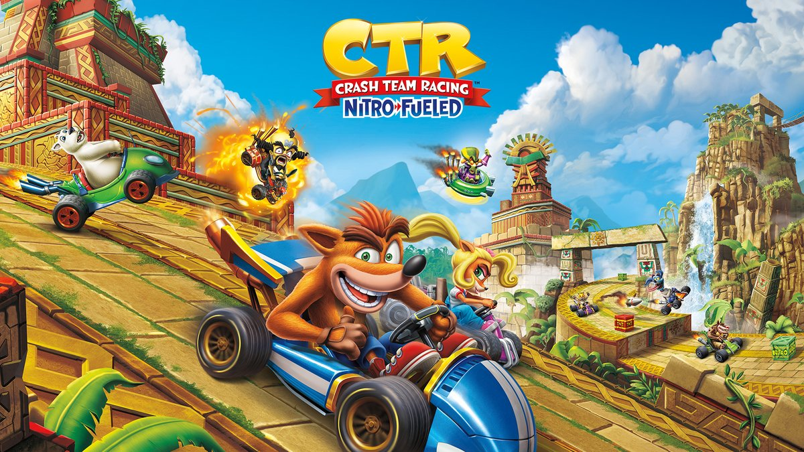

Crash Team Racing Nitro-Fueled es una opción ideal para competiciones gracias a su exigente sistema de mecánicas avanzadas, donde la habilidad en los derrapes y el control de velocidad superan al azar de los objetos, garantizando además igualdad de condiciones al permitir elegir cualquier estilo de manejo sin ventajas desbloqueables. No obstante, al organizar un torneo se deben mitigar sus limitaciones técnicas, como los 30 FPS nativos, la falta de un modo espectador y los largos tiempos de carga en consolas antiguas, utilizando idealmente sistemas de actual generación como PS5 o Xbox Series X|S. Para lograr un evento fluido y justo, el formato más recomendable consiste en partidas presenciales de uno contra uno o dos contra dos en pantalla dividida, disputando rondas de cuatro a seis pistas bajo un sistema de puntos y desactivando los ítems para premiar exclusivamente la destreza pura de cada corredor.
